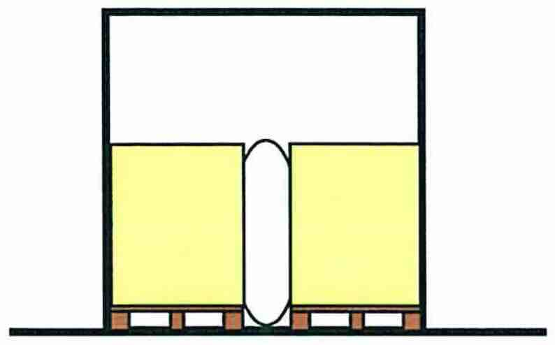

1. Z čoho sa skladá vonkajšia prehliadka vozidla pred jazdou?
c) celkový stav karosérie, úplnosť výstroja, stav pneumatík, čistota EČV, svetiel, spätných zrkadiel a okien
2. Aké úkony má vykonať vodič pred začatím jazdy aby jazda z vozidlom, ktoré preberá na prepravu bola bezpečná?
b) nastavenie sedadla, spätných zrkadiel (resp. kontrola funkčnosti kamerového systému) a pripútane sa bezpečnostným pásom
3. Keď vodič vozidla dokončí radenie prevodových stupňov čo musí urobiť?
d) pravú ruku vrátime na volant a nenechávame ju na riadiacej páke lebo dochádza k zbytočnému zaťaženiu mechanizmu radenia a jeho zbytočnému opotrebovaniu
4. Aké sú hlavné zásady vedenia vozidla na rovnej ceste?
b) viesť vozidlo v pravej polovici vozovky a pokiaľ tomu nebránia osobitné okolnosti, pri pravom okraji vozovky; pozorne sledovať premávku pred vozidlom aj za vozidlom aj vedľa vozidla; podľa možnosti sleduje premávku ďalej pred vozidlo a snažíme sa správne odhadovať vývoj dopravnej situácie a podľa toho včas a správne reagovať
5. Aké sú hlavné zásady vedenia vozidla v zákrute?
c) pred zákrutou včas znížime rýchlosť jazdy, prípadne preradíme na nižší prevodový systém; pri vchádzaní do zákruty a počas jej prechádzania už nebrzdíme; volantom je potrebné natáčať plynulo aby dráha vozidla zostávala v pravej polovici vozovky a v neprehľadných zákrutách byť pripravený aj na možnú prekážku napr. odstavené vozidlo, cyklistu, chodca a pod.
6. Aké sú hlavné zásady vedenia nákladného vozidla v meste alebo obci?
b) podľa možnosti sa prispôsobíme najmä vozidlám idúcim pred nami v našom jazdnom pruhu a zbytočne neprechádzame z pruhu do pruhu; využívame jazdné pruhy pre autobusy; pred priechodom pre chodcov alebo cyklistov dodržiavame dostatočný odstup od vozidiel aby sme mohli pri vstúpení chodcov a cyklistov na priechod pred ním plynule a bezpečne zastaviť vozidlo
7. Aké má hlavné nároky na vedenie vozidla v meste aby bolo bezpečné?
c) v meste musíme sledovať svetelné signály, pokyny oprávnených osôb, dopravné značenie, pohyb chodcov, cyklistov, kolobežkárov, vozidiel, smerové tabule atď.; preto vedenie vozidla v meste si vyžaduje veľké sústredenie, predvídavosť, rozhodnosť a určitú zručnosť vodiča
8. Ktoré informačné systémy sa nepoužívajú na optimalizáciu trasy prepravy v cestnej doprave?
c) palubná jednotka na platbu mýtneho
9. V nákladných vozidlách a autobusoch
d) prevažuje použitie vznetových motorov
10. Vznetový motor
c) môže spaľovať naftu alebo iné vhodné palivo, ktoré sa po vstrieknutí do pracovného priestoru valca vznietia teplom kompresiou stlačeného vzduchu
11. K pretočeniu motora (prekročeniu maximálnych otáčok motora) môže dôjsť v dôsledku preradenia na
b) nižší prevodový stupeň
12. Pri prekročení maximálnych otáčok motora
a) hrozí poškodenie motora v dôsledku zrážky dna piesta s ventilom
13. Optimálna prevádzková teplota vodou chladeného motora je
a) 80- 90 °C
14. Nesprávna geometria riadiacej nápravy
a) má vplyv na ovládateľnosť vozidla a opotrebenie pneumatík
15. Pripojiť brzdený príves za vozidlo vybavené ABS
c) je dovolené pripájať len príves s ABS
16. Pri výmene žiaroviek musíme použiť žiarovku
d) rovnakého výkonu, napätia a konštrukcie, pričom musíme dbať na jej správne umiestnenie
17. Pri výmene poistky
b) nie je dovolené použiť poistku vyššej hodnoty
18. V akumulátore je energia skladovaná vo forme elektrochemickej reakcie
c) po neúspešnom štarte motora musíme počkať v lete 15 - 20 sekúnd v zime 30 sekúnd, kým prebehne chemická reakcia
19. Kapacita akumulátora s klesajúcou teplotou okolia
c) klesá
20. Akumulátoru škodí
d) dlhé vybíjanie vysokým prúdom, skraty, ponechanie vo vybitom stave atď.
21. Rozsvietená kontrolka dobíjania znamená, že
a) alternátor nedodáva prúd
22. Diferenciál pri prejazde zákrutou umožňuje
b) aby sa vonkajšie kolesá otáčali rýchlejšie ako vnútorné
23. Uzávierka diferenciálu
a) zabezpečí, že sa na obe kolesá jednej nápravy privedie rovnaký krútiaci moment. Nesmie sa použiť na povrchoch s dobrou priľnavosťou
24. Schopnosť pneumatík prenášať sily na podklad
d) s narastajúcou rýchlosťou klesá
25. Nepravidelne opotrebený behúň pneumatiky upozorňuje na
a) chybu v zavesení kolies a v geometrii náprav
26. Zanesený filter vzduchu
a) zhoršuje plnenie valcov a zvyšuje spotrebu paliva
27. Pri prehriati vodou chladeného motora v dôsledku nedostatočného množstva chladiacej kvapaliny
a) opatrne necháme uniknúť pretlak v chladiacom systéme a vodu dolievame až po vychladnutí motora
28. Trecia spojka
d) slúži na krátkodobé prerušenie spojenia medzi motorom a kolesami
29. Úlohou oleja v motore je
b) mazať, tesniť, chladiť, odplavovať nečistoty, chrániť proti korózii, tlmiť hluk
30. Pri výmene oleja v motore
d) musíme použiť olej v súlade s odporúčaniami výrobcu
31. Pri dopĺňaní motorového oleja môžeme použiť
d) len olej rovnakého druhu a kvality aký je v motore použitý
32. Prečo je kontrola množstva prevádzkových kvapalín dôležitá?
c) je dôležitá z hľadiska správnej funkcie, mazania, chladenia a hydraulických systémov
33. Na motorovom vozidle sa používajú
d) prevodové a motorové oleje, prípadne hydraulické
34. Pred zimnou prevádzkou
a) skontrolujeme či je vozidlo pripravené na zimnú prevádzku (množstvo, stav a kvalitu prevádzkových kvapalín, výstroj a výzbroj vozidla)
35. Pri výmene kolesa
a) používame náhradné koleso predpísané výrobcom
36. Pri výmene kolesa
c) musíme zaistiť vozidlo proti samovoľnému pohybu zabrzdením a zakladacími klinmi. Matice kolies povolíme. Odstránime ich až keď je koleso vozidla zodvihnuté tak, že stratilo kontakt s podkladom
37. Pri výmene kolies
b) použijeme zdvihák nosnosti rovnajúcej sa najmenej zaťaženiu kolesa ktoré chceme vymeniť
38. Ak pri výmene kolies treba dohustiť pneumatiku
d) na tlak predpísaný pre nápravu na ktorú sme koleso namontovali
39. Snehové reťaze zlepšia adhéziu kolesa
d) len na ceste pokrytej dostatočnou vrstvou snehu
40. Po výmene kolesa matice kolies
b) matice kolies dotiahneme kľúčom a po spustení nápravy ich dotiahneme podľa pokynov výrobcu. Ich dotiahnutie po prejdení vzdialenosti cca 50 km skontrolujeme
41. Hĺbka drážky dezénu pneumatiky
c) je rozhodujúca pre odvod vody z kontaktnej plochy s vozovkou
42. Pokiaľ poškodenie pneumatiky odhaľuje jej kostru, pneumatika
d) sa nesmie používať
43. Čo spôsobuje podhustená pneumatika?
d) znižuje životnosť pneumatiky v ubehnutých kilometroch a zhoršuje aj prenos síl medzi pneumatikou a podkladom
44. Rozdielny polomer pneumatík na dvojmontáži čo spôsobuje?
d) pneumatika s väčším polomerom prenáša väčšie zaťaženie
45. Kedy sú pneumatiky zhodné?
d) ak majú rovnaký rozmer, konštrukciu, druh dezénu a značku
46. Pneumatiky rovnakého rozmeru, konštrukcie (diagonálna - radiálna) od rôznych výrobcov majú aké vlastnosti?
b) majú rôzne vlastnosti
47. Čo ovplyvňujú pneumatiky rôzneho druhu a konštrukcie na tej istej náprave?
b) ovplyvňujú jazdné vlastnosti vozidla
48. Ak sme opravovali defekt na pneumatike namontovanej na delenom ráfiku čo musíme zaistiť?
d) musíme pri jej hustení mechanicky zaistiť, aby uvoľnený záverný kruh nemohol spôsobiť úraz
49. Vozidlo vybavené systémom bŕzd ABS ako sa správa pri intenzívnom brzdení?
a) má zaručenú riaditeľnosť smeru aj pri intenzívnom brzdení
50. Čo môže spôsobiť použitie odľahčovacej brzdy pri jazde za zhoršených adhéznych podmienok?
a) môže spôsobiť šmyk vozidla, prípadne zalomenie súpravy
51. Ako sa mení dráha na zastavenie vozidla?
b) sa mení s dĺžkou reakcie vodiča a rýchlosťou vozidla
52. V čom pomáha Elektronický stabilizačný systém (ESP)?
c) napomáha vodičovi udržať vozidlo v želanom smere jazdy v rámci fyzikálnych zákonov
53. Vzduchojemy je potrebné odvodňovať, aby kondenzačná voda nespôsobila?
c) nespôsobila nefunkčnosť brzdového systému, najmä v zime v dôsledku zamrznutia
54. Pokles tlaku vzduchu vo vzduchojemoch pri vzduchových brzdách môže spôsobiť?
d) spôsobí zhoršenú účinnosť brzdenia
55. Ak porovnáme brzdnú dráhu vozidiel, tak ktoré vozidlo brzdí účinnejšie?
d) osobné vozidlo brzdí účinnejšie
56. Ako postupujeme pri hľadaní poruchy na vozidle?
b) postupujeme na základe znalosti konštrukcie vozidla od jednoduchších k zložitejších častiam
57. Ak pri zošliapnutí prevádzkovej brzdy počuť unikať vzduch. čo to znamená?
b) je to signál, že brzdový systém je netesný
58. Veľká vôľa brzdových kľúčov môže spôsobiť?
c) pri brzdení sa zväčšuje spotreba tlakového vzduchu a predlžuje sa čas nábeh brzdného účinku
59. Ak pri brzdení blokuje jedno koleso čo sa má vykonať?
b) je to dôvod na dočasné vyradenie vozidla z prevádzky
60. Ak štartér nedokáže pretočiť motor príčinou je?
d) vybitý akumulátor, zlý kontakt na svorkách akumulátora, chyba v ukostrení akumulátora alebo štartéra, zlý štartér, alebo kombinácia týchto závad
61. Z akých príčin nesvieti žiarovka vonkajšieho osvetlenia vozidla?
c) skrat vo vedení, vypálená poistka, zlý kontakt na kostru vozidla, porucha vo vedení, zlá žiarovka
62. Kde zisťujeme vôľu riadenia?
a) na volante
63. Akumulátor neudrží kapacitu a ihneď po pripojení na nabíjačku prudko vrie. Čo je potrebné vykonať?
d) akumulátor je potrebné vymeniť
64. Čo môže byť príčinou rozsvietenia kontrolky dobíjania?
b) je uvoľnený alebo poškodený klinový remeň, prípadne je poškodený alternátor
65. Ak stierač čelného skla zanecháva nezotreté plochy. čo je potrebné vykonať?
a) okamžite vymením stierač
66. Emisné kontroly motorových vozidiel sú v Slovenskej republike povinné?
a) sú povinné
67. Ako sú stanovené intervaly údržby vozidla výrobcom?
b) sú stanovené s ohľadom na technickú a prevádzkovú životnosť jednotlivých častí a náplní a sú potrebné pre dodržanie životnosti vozidla a bezpečnosti jeho prevádzky
68. Pravidelná kontrola tlaku hustenia pneumatík
c) ovplyvňuje bezpečnosť cestnej premávky, pretože správne nahustené pneumatiky lepšie prenášajú sily na vozovku
69. Vytekajúci olej z tlmiča
b) má za následok zmenu jazdných vlastností vozidla a je dôvodom na dočasné vyradenie vozidla z cestnej premávky
70. Technické kontroly nákladných automobilov sa vykonávajú v intervaloch
b) každý rok
71. Pri prekonávaní stúpaní by mal vodič
d) udržiavať motor v stabilnej oblasti otáčok
72. Pri jazde ustálenou rýchlosťou, aby dosiahol najnižšiu spotrebu paliva by mal vodič
c) zaradiť najvyšší možný prevodový stupeň tak, aby motor pracoval pravidelne a bez známok preťaženia
73. Kedy sa spotreba vozidla zvyšuje?
d) ak vozidlo prekonáva stúpanie, zvyšuje rýchlosť jazdy, ťahá príves, má podhustené pneumatiky
74. Za akých podmienok sa môžu sa v Slovenskej republike využívať aerodynamické zariadenia na zadnej časti nákladného vozidla (jazdnej súpravy)?
c) Na zvýšenie energetickej účinnosti môžu byť v Slovenskej republike vybavené nákladné vozidlá alebo jazdné súpravy na ich zadnej časti aerodynamickými zariadeniami, ktoré môžu presiahnuť najväčšie povolené dĺžky. Aerodynamické zariadenia, ktoré presahujú dĺžku 500 mm, musia byť pred uvedením na trhy schválené. Pri používaní týchto zariadení sa musia spĺňať prevádzkové požiadavky podľa platnej legislatívy týkajúcej sa prevádzky vozidiel v cestnej premávke.
75. Najšetrnejší k životnému prostrediu je motor spĺňajúci emisné limity
b) EURO 6
76. Defenzívny spôsob jazdy
a) zaisťuje minimálnu spotrebu a prispieva k bezpečnosti cestnej premávky
77. Ak začne na vozidlo pôsobiť bočná sila (bočný vietor), neutrálne vozidlo
a) nezmení svoj smer pohybu, posunie sa len v smere pôsobenia bočnej sily
78. Ak má vozidlo s neutrálnou charakteristikou podhustené pneumatiky na prednej náprave, bude sa správať ako vozidlo
a) nedotáčavé
79. Ak vozidlo mení smer a rýchlosť jazdy, neupevnený náklad
b) má snahu pohybovať sa v pôvodnom smere a pôvodnou rýchlosťou
80. Stopový a obrysový polomer zatáčania vozidla
a) sú rôzne polomery, pričom vonkajší obrysový polomer je vždy väčší ako stopový polomer
81. Ak iný účastník cestnej premávky svojim správaním vyvolá nebezpečnú situáciu na ceste
a) ostatní účastníci cestnej premávky musia svojim správaním odvrátiť hroziace ak je to v ich silách nebezpečenstvo,
82. Dynamická agresívna jazda na hranici technických možností je prejavom
b) toho, že vodič je nebezpečný sebe aj ostatným účastníkom dopravy, pretože mu neostáva rezerva na zvládnutie kritických situácií
83. Vodiči smú jazdiť len takou rýchlosťou
a) aby mohli na ich správanie reagovať aj ostatní účastníci cestnej premávky
84. Deti nachádzajúce sa pri okraji cesty
b) znamenajú, že vodič musí zvýšiť opatrnosť, pretože dieťa nie vždy vie správne vyhodnotiť situáciu
85. Ak je na vozovke vyznačený vyhradený jazdný pruh, ostatní vodiči vozidiel, pre ktorých nie je vyhradený jazdný pruh určený, smú naň vojsť?
a) smú naň vojsť len pri obchádzaní, predchádzaní, odbočovaní, otáčaní, vchádzaní na cestu, alebo ak to dovoľuje dopravná značka alebo ak to vyžadujú mimoriadne okolnosti, najmä ak nie je medzi vyznačeným jazdným pruhom a okrajom vozovky dostatok miesta
86. Ak vozidlo spomaľuje, pôsobia na náklad a prepravované osoby zotrvačné sily, ktoré
a) narastajú s veľkosťou zmeny
87. Schopnosť pneumatík prenášať brzdné sily
a) sa s rýchlosťou mení - vyššia rýchlosť horšia schopnosť prenášať sily
88. Ak pri brzdení pôsobia na vozidlo súčasne aj bočné sily
c) schopnosť pneumatík prenášať bočné sily sa znižuje a pri zablokovaní kolesa dôjde k úplnej strate schopnosti prenášať bočné sily
89. Vodič vozidla, ktoré nie vybavené systémom ABS
a) by mal počítať s tým, že pri intenzívnom brzdení môže stratiť možnosť ovládať smer pohybu vozidla
90. Použitie zimných pneumatík na suchom povrchu pri teplote pod 7 °C
a) skráti brzdnú dráhu
91. Vodič je povinný prispôsobiť rýchlosť jazdy
a) svojim schopnostiam, vlastnostiam vozidla a nákladu, poveternostným podmienkam, stavu a povahe vozovky a iným okolnostiam, ktoré možno predvídať.
92. Náklad musí byť zabezpečený
a) tak, aby pri zmene rýchlosti jazdy alebo zmene smeru jazdy vozidla sa nezošmykol, neprevrátil, nespadol alebo sa inak voľne nepohyboval
93. Pri preprave nákladu
a) sa nesmie prekročiť najväčšia prípustná celková hmotnosť vozidla, najväčšia prípustná hmotnosť jazdnej súpravy, najväčšia prípustná celková hmotnosť prípojného vozidla ani najväčšia prípustná hmotnosť pripadajúca na nápravy vozidla
94. Vodič vozidla, ktoré je povinne vybavené prenosným výstražným trojuholníkom
a) je povinný tento trojuholník použiť počas núdzového státia, najmä pri prerušení jazdy pre chybu na vozidle alebo na náklade alebo v dôsledku dopravnej nehody, ak také vozidlo tvorí prekážku cestnej premávky
95. Vodič nesmie zastaviť na vyhradenom parkovisku,
a) ak nejde o vozidlo, pre ktoré je parkovisko vyhradené
96. Pred železničným priecestím je vodič návesovej súpravy povinný?
a) vodič je povinný počínať si mimoriadne opatrne, najmä sa presvedčiť, či môže bezpečne prejsť cez železničné priecestie
97. Plne naložené vozidlo
b) má síce vyššiu spotrebu paliva ale v prepočte na prepravenú užitočnú hmotnosť je to výhodné
98. Defenzívny spôsob jazdy
b) spôsobuje, že vodič menej často brzdí, zrýchľuje a preraďuje; to znižuje spotrebu paliva, opotrebenie bŕzd, pneumatík a celého vozidla
99. Čo je potrebné zabezpečiť pri ukladaní nákladu na vozidlo?
b) náklad treba rozložiť rovnomerne po celej ložnej ploche tak, aby čo najmenej zvyšoval veľkosť čelnej plochy vozidla, čím sa zníži spotreba paliva
100. Deflektor nad kabínou vozidla znižuje súčiniteľ odporu vzduchu vozidla
b) pokiaľ vozidlo jazdí bez nákladu prestavím deflektor do zníženej polohy. Tým docielim zníženie veľkosti čelnej plochy a zníženie spotreby paliva
101. Náklady na spotrebované palivo prepočítané na jeden ubehnutý kilometer
a) patria k najvýznamnejším variabilným (premenlivým) nákladom na ubehnutý kilometer
102. Preťaženie vozidla pri jazde po verejných komunikáciách
c) nie je prípustné, pretože preťažené vozidlo poškodzuje komunikácie (napr. vytvára v povrchu cesty koľaje)
103. Ovplyvňuje rýchlosť jazdy spotrebu paliva vozidla?
c) áno, rýchlosť vozidla ovplyvňuje spotrebu paliva
104. Ako vplýva podhustená pneumatika na spotrebu paliva?
d) zvyšuje spotrebu paliva
105. Ako vplýva prehustená pneumatika na opotrebovanie plášťa?
b) zvyšuje opotrebovanie plášťa
106. Ako vplýva podhustená pneumatika na opotrebovanie plášťa?
b) zvyšuje opotrebovanie plášťa
107. Na prepravovaný náklad pôsobia pozdĺžne a priečne sily
b) náklad je potrebné upevniť proti pohybu v priečnom a pozdĺžnom smere, ako aj proti preklopeniu
108. Pokiaľ je vozidlo naložené
b) dochádza k zmene jeho ťažiska, čo ovplyvní jeho jazdné vlastnosti
109. Odstredivá sila pôsobiaca na náklad pri rovnakej rýchlosti jazdy
d) rastie so zmenšujúcim sa polomerom zákruty
110. Pri preprave kvapalín v cisterne
c) sa kvapaliny prelievajú a menia polohu ťažiska vozidla, čo mení jeho jazdné vlastnosti
111. Ak ukladám náklad v niekoľkých vrstvách
b) je potrebné si uvedomiť, že na spodnú vrstvu vytvárajú tlak vrchné vrstvy
112. Pokiaľ materiál vo vrstvách zaisťujeme proti pohybu pomocou vrchného viazania
a) je potrebné skontrolovať, či v dôsledku prídavného zaťaženia od upínacích prvkov nedôjde k prekročeniu povoleného zaťaženia jednotlivých vrstiev
113. Pokiaľ náklad presahuje obrys vozidla
b) je potrebné ho označiť v zmysle platnej legislatívy
114. Pri preprave nákladu
b) sa nesmie prekročiť najväčšia prípustná celková hmotnosť vozidla, najväčšia prípustná hmotnosť jazdnej súpravy, najväčšia prípustná celková hmotnosť prípojného vozidla ani najväčšia prípustná hmotnosť pripadajúca na nápravy vozidla
115. Aká je najväčšia povolená hmotnosť pripadajúca na jednotlivú hnaciu nápravu pre všetky kategórie vozidiel, ak hnacia náprava je vybavená dvojitou montážou pneumatík a vzduchových odpružením alebo odpružením uznaným za rovnocenné v rámci Európskej únie v SR?
c) 11,5 ton
116. Ako musia byť označené vozidlá vykonávajúce nadrozmernú prepravu, ktorých šírka prevyšuje 3,00 m alebo výška prevyšuje 4,30 m alebo dĺžka prevyšuje 23,0m vrátane prepravovaného nákladu, alebo nadmernú prepravu, ktorých vozidlo alebo jazdná súprava prevyšuje 50,0 ton?
b) musia byť v prednej a zadnej časti vozidla označené špeciálnym informatívnym označením, ktoré upozorňuje na zvláštnu prepravu
117. Ak pri nadrozmernej preprave vozidiel a jazdných súprav v cestnej premávke celková šírka vozidla prevyšuje 3 m alebo celková výška prevyšuje 4,3 m, alebo celková dĺžka prevyšuje 23 m vrátane prepravovaného nákladu sú potrebné sprievodné vozidlá?
b) vozidlo alebo jazdná súprava musia byť vpredu (okrem diaľnice a rýchlostnej cesty) aj vzadu sprevádzané sprievodnými vozidlami vybavenými zvláštnymi výstražnými svietidlami oranžovej farby a označené špeciálnym označením
118. Čo je potrebné zabezpečiť ak by pri nadrozmernej preprave malo dôjsť k obmedzeniu plynulosti a bezpečnosti cestnej premávki, prípadne obmedzeniu cestnej premávky?
c) vozidlo alebo jazdná súprava musia byť sprevádzané policajnými sprievodnými vozidlami vybavenými zvláštnymi výstražnými svietidlami a označené špeciálnym označením
119. Vozidlá vybavené vzadu zdvíhacou nakladacou plošinou (hydraulickým čelom) musia mať na zadných čelných plochách čo najbližšie k horným a bočným obrysom zdvíhacej nakladacej plošiny
a) označenie prichytené tak, aby pri sklopení zdvíhacej nakladacej plošiny v každej polohe špeciálne označenie bolo vo zvislej polohe a viditeľné zo zadnej strany
120. Aké sú požiadavky na náklad pri preprave?
d) Náklad musí byť riadne umiestnený, rozložený a upevnený, aby neohrozoval bezpečnosť a plynulosť cestnej premávky, neznečisťoval ani nepoškodzoval cestu ani jej okolie, nespôsoboval nadmerný hluk, zneznečisťoval ovzdušie a nezakrýval svetlomety a svietidlá vozidla, odrazové sklá, tabuľku s evidenčným číslom a vyznačenie najvyššej povolenej rýchlosti. Náklad musí byť zabezpečený tak, aby pri zmene rýchlosti jazdy alebo zmene smeru jazdy vozidla sa nezošmykol, neprevrátil, nespadol alebo sa inak voľne nepohyboval. Predmety, ktoré možno ľahko prehliadnuť, nesmú prečnievať po strane vozidla.
121. Nakladanie a skladanie nákladu na ceste
a) je dovolené len vtedy, ak to nemožno urobiť mimo cesty; náklad sa musí zložiť a naložiť čo najrýchlejšie a tak, aby nebola ohrozená bezpečnosť cestnej premávky
122. Ak vodič počas jazdy zistí, že vozidlo, náklad alebo upevnenie nákladu nespĺňajú ustanovené podmienky
d) je povinný chybu odstrániť na mieste; ak to nemôže urobiť, smie v jazde pokračovať primeranou rýchlosťou len do najbližšieho miesta, kde možno chybu odstrániť; pritom musí urobiť také opatrenia, aby sa počas jazdy na takéto miesto neohrozila bezpečnosť ani plynulosť cestnej premávky a aby sa nepoškodila cesta
123. Ak to vyžadujú okolnosti, najmä pri preprave dlhého nákladu čo musí vodič zabezpečiť?
d) vodič musí zaistiť bezpečné odbočenie pomocou spôsobilej a náležite poučenej osoby
124. Vodič musí pri nakládke a vykládke
d) zabezpečiť vozidlo proti nežiadúcemu pohybu. Návesy, jednonápravové prívesy a poloprívesy musia byť tiež podopreté
125. Na zabránenie presunu obalov
a) môžu byť na vyplnenie akýchkoľvek prázdnych alebo ich zablokovaním a ukotvením miest použité obkladacie materiály proti nárazom,
126. Keď sú na upevnenie nákladu použité viazacie popruhy, čo je potrebné zabezpečiť?
b) tieto nesmú byť zatiahnuté tak, aby spôsobili poškodenie alebo deformáciu obalov
127. Náklad sa musí upevniť v smere dopredu proti šmyku a preklopeniu vplyvom zotrvačných síl vyvolaných
c) 80 percentami hmotnosti nákladu
128. Náklad sa musí upevniť v smere dozadu proti šmyku a preklopeniu vplyvom zotrvačných síl vyvolaných
b) 50 percentami hmotnosti nákladu
129. Náklad sa musí upevniť v smere do strán proti šmyku a preklopeniu vplyvom zotrvačných síl vyvolaných
d) 50 percentami hmotnosti nákladu proti šmyku a 0 percentami hmotnosti nákladu proti preklopeniu
130. Užitočné zaťaženie vozidla sa vypočíta ako
b) celková hmotnosť vozidla mínus pohotovostná hmotnosť vozidla
131. Užitočné zaťaženie návesu sa vypočíta v Slovenskej republike ako
c) 40 ton mínus pohotovostná hmotnosť návesu a pohotovostná hmotnosť ťahača
132. Celkový objem ložného priestoru sa približne vypočíta ako
d) vnútorná dĺžka krát vnútorná šírka krát vnútorná výška ložného priestoru
133. Ak chceme znížiť riziko šmyku nákladu mali by sme?
c) zvýšiť trenie medzi nákladom a ložnou plochou pomocou protišmykovej podložky
134. Označenie LC na identifikačnom štítku viazacieho popruhu podľa EN 12195-2 znamená?
b) viazaciu kapacitu v priamom ťahu
135. Označenie STF na identifikačnom štítku viazacieho popruhu podľa EN 12195-2 znamená?
c) normálnu napínaciu silu
136. Aké maximálne predĺženie môže mať popruh certifikovaný podľa EN 12195-2?
c) 7 %
137. Ktorú metódu upevnenia je najvhodnejšie použiť pre vrecia paletizované a zabalené na palete fóliou v skriňovom vozidle alebo kontajneri ak náklad nevypĺňa celú ložnú plochu. Vyberte iba jednu alternatívu?
d) vyplnenie medzier vzduchovými vankúšmi alebo prázdnymi paletami

138. Ako je potrebné rozložiť náklad na bežnom návese?
b) aby jeho ťažisko bolo približne v strede návesu v pozdĺžnom aj priečnom smere a pokiaľ je to možné čo najnižšie
139. Čo môže vodič počas nakládky vykonávať?
c) môže dávať pokyny nakladaciemu personálu k rozloženiu nákladu
140. Na upevnenie ťažkých nákladov napríklad pracovných strojov je vhodné využiť akú metódu upevnenia a aké upevňovacie prostriedky?
b) priame viazanie a viazacie reťaze
141. Je povinný dopravca pri tvorbe harmonogramu prepravy rešpektovať požiadavky sociálnych predpisov na jazdu, prestávky a odpočinky vodiča?
a) áno, pri tvorbe harmonogramu prepravy je dopravca povinný rešpektovať požiadavky sociálnych predpisov (napr. Nariadenie (ES) č. 561/2006 a Dohody AETR)
142. Aký je maximálny nepretržitý čas jazdy vodiča vo vnútroštátnej cestnej doprave s vozidlom s celkovou hmotnosťou vyššou ako 3,5 tony?
c) 4,5 hodiny
143. Aká je minimálna doba prestávky v práci vo vnútroštátnej cestnej doprave, ktorú musí vodič čerpať po nepretržitom čase jazdy 4,5 hodiny, ak nezačína čerpať denný čas odpočinku alebo týždenný čas odpočinku?
d) najmenej 45 minút
144. Po akom dlhom nepretržitom čase jazdy vodiča s motorovým vozidlom s celkovou hmotnosťou vyššou ako 3,5 tony musí vodič jazdu prerušiť a čerpať prestávku v práci?
b) nepretržitý čas jazdy vodiča nesmie trvať dlhšie ako 4,5 hodiny
145. Ktorá z nasledujúcich možností čerpania prestávok v práci vodiča nespĺňa požiadavky právnych predpisov pre vnútroštátnu cestnú nákladnú dopravu realizovanú s vozidlom s celkovou hmotnosťou vyššou ako 3,5 tony?
c) tri prestávky po 15 minút, čerpané pred prekročením 4,5 hodinového času jazdy
146. Kde môže vodič čerpať denný čas odpočinku?
c) v zaparkovanom vozidle vtedy ak je vozidlo vybavené ležadlom
147. Aká je minimálna doba prestávky v práci v medzinárodnej cestnej doprave, ktorú musí vodič čerpať po nepretržitom čase jazdy 4,5 hodiny, ak nezačína čerpať denný čas odpočinku alebo týždenný čas odpočinku?
d) najmenej 45 minút
148. Za aké obdobie je vodič nákladného vozidla povinný predložiť záznamy o svojej činnosti v prípade kontroly práce vodiča formou cestnej kontroly Inšpektorátom práce SR?
d) za bežný deň a predchádzajúcich 28 kalendárnych dní
149. Ako dlho musí slovenský dopravca vykonávajúci medzinárodnú cestnú dopravu uchovávať tachografové záznamy?
a) najmenej po dobu 24 mesiacov
150. Je povinný digitálny tachograf pre každé nákladné vozidlo s celkovou hmotnosťou nad 3,5 t?
d) nie, je povinný iba pre nákladné vozidlá, ktoré boli prvý krát registrované po 1. 5. 2006
151. Na koľko rokov sa vydáva karta vodiča do digitálneho tachografu (akú má karta vodiča do digitálneho tachografu platnosť)?
c) 5 rokov
152. Ktorý údaj musí vodič potvrdiť v digitálnom tachografe bezprostredne po prekročení štátnej hranice?
a) krajinu výjazdu
153. Ako má postupovať vodič, ak dôjde k poruche digitálneho tachografu?
c) vodič, ak zistí poruchu tachografu, je povinný vykonávať ďalej záznam ručne na zadnej strane pásky do digitálneho tachografu až do dojazdu do sídla dopravcu, maximálne však 7 dní.
154. Akým spôsobom je možné rozdeliť pravidelný denný čas odpočinku pri medzinárodnej cestnej doprave vykonávanej v členských krajinách EÚ?
d) denný odpočinok je možné rozdeliť iba na dve časti za požiadavky, že prvá časť odpočinku musí byť minimálne 3 hodiny, po ktorej nasleduje druhá časť odpočinku v trvaní minimálne 9 hodín
155. Ako je definovaný pracovný týždeň pre stanovenie režimov práce v medzinárodnej cestnej doprave?
d) týždeň, začínajúci sa o polnoci z nedele na pondelok a trvajúci do nasledujúcej polnoci z nedele na pondelok
156. Pán Novák, ktorý skončil denný čas odpočinku o 7.00 hod., pristavil vozidlo s nosnosťou 10 ton na nakládku (čas jazdy od 7.00 do 7:30). Nakládka sa realizovala od 7:30 do 8.30 hod. Bezprostredne po nakládke vodič začal jazdu do cieľa prepravy, vzdialeného 650 km. Kedy najneskôr musí prerušiť čas jazdy, ak sa preprava vykonáva iba v rámci členských krajín EÚ?
b) o 12.30 hod.
157. Sociálne právo upravujúce prácu vodiča umožňuje vodičovi čerpať okrem pravidelného aj skrátený denný čas odpočinku. Aký je najkratší možný odpočinok, ktorý je možné započítať za skrátený denný čas odpočinku?
b) deväť hodín
158. Ktorá z nasledujúcich možností vyhovuje požiadavkám na denný odpočinok pri viacčlennej osádke vozidla pri medzinárodnej cestnej doprave?
b) denný odpočinok 9 hodín čerpaný v priebehu 30-tich po sebe nasledujúcich hodín
159. Ktorá z nasledujúcich možností čerpania prestávok v práci vodiča nespĺňa požiadavky právnych predpisov pre medzinárodnú cestnú nákladnú dopravu realizovanú s vozidlom s celkovou hmotnosťou vyššou ako 3,5 tony?
c) tri prestávky po 15 minút, čerpané pred prekročením 4,5 hodinového času jazdy
160. Koľko musí trvať minimálne druhá časť rozdeleného pravidelného denného času odpočinku pri medzinárodnej cestnej doprave?
b) 9 nepretržitých hodín
161. Koľko musí trvať minimálne prvá časť rozdeleného pravidelného denného času odpočinku pri medzinárodnej cestnej doprave?
b) 3 nepretržité hodiny
162. Najneskôr po koľkých dňoch od posledného stiahnutia karty je potrebné znova stiahnuť údaje z karty vodiča do digitálneho tachografu?
c) najneskôr po 28 dňoch
163. Akú farbu má karta vodiča do digitálneho tachografu?
d) bielu
164. Ako má postupovať vodič, ak z dôvodu zdržania spôsobeného dopravnou nehodou sa odklonil od požiadaviek sociálnych predpisov (npr. prekročil nepretržitý čas jazdy)?
d) na zadnú stranu pásky do digitálneho tachografu, vodič uvedie meno a priezvisko, číslo karty vodiča, čas, dôvod odchýlky a podpis
165. Koľko krát za týždeň môže vodič pri medzinárodnej cestnej nákladnej doprave vykonávanej v rámci krajín EÚ predĺžiť denný čas jazdy na 10 hodín?
b) dvakrát do týždňa
166. Koľko hodín musí vodič cestnej nákladnej dopravy čerpať odpočinok, ak bude čerpať pravidelný denný odpočinok?
c) min. 11 za sebou nasledujúcich hodín
167. Vodič vykonávajúci prepravu v medzinárodnej cestnej doprave vozidlom s celkovou hmotnosťou 15 ton v aktuálnom týždni jazdil s vozidlom 48 hodín. Aký maximálny čas jazdy môže vodič realizovať nasledujúci týždeň?
b) 42
168. V ktorých prípadoch musí zamestnávateľ vodičovi poskytnúť kópie dát stiahnutých z digitálneho tachografu?
a) zamestnávateľ je povinný poskytnúť kópie záznamov vodičovi, ktorý o to požiada a potrebuje ich napr. pri súdnom konaní
169. Ktorá z nasledovných foriem odpočinku čerpaná v priebehu 24 hodín je v súlade s požiadavkami na pravidelný denný odpočinok pri medzinárodnej cestnej doprave vykonávanej v členských krajinách EÚ?
b) 3,5 hodiny+ 9 hodín
170. Na aký najkratší čas je možné skrátiť týždenný odpočinok v medzinárodnej cestnej nákladnej doprave vykonávanej v rámci členských krajín EÚ?
a) 24 hodín
171. Aký je podľa sociálnych predpisov maximálny čas jazdy jedného vodiča v medzinárodnej cestnej doprave v priebehu jedného týždňa?
b) 56 hodín
172. Aký je maximálny čas jazdy vodiča nákladného vozidla s celkovou hmotnosťou nad 3,5 tony v medzinárodnej cestnej doprave v priebehu dvoch po sebe nasledujúcich týždňov?
a) 90 hodín
173. V ktorom prípade môže vodič v dvoch po sebe nesledujúcich týždňoch čerpať skrátený týždenný čas odpočinku?
d) v prípade medzinárodnej cestnej nákladnej dopravy za predpokladu, že v priebehu obidvoch týždňov sa vodič s vozidlom nebude nachádzať na území štátu, v ktorom ma vodič trvalý pobyt, resp. dopravca má svoje sídlo.
174. Kedy najneskôr od skončenia predošlého denného času odpočinku musí vodič začať čerpať nový odpočinok, ak plánuje čerpať pravidelný denný čas odpočinku v trvaní 11 hodín?
c) po 13 hodinách od skončenia predchádzajúceho denného času odpočinku
175. Ktorý odpočinok nie je možné prerušiť pri preprave vozidla na trajekte?
c) skrátený denný odpočinok
176. V prípade straty tachografovej karty vodiča musí vodič vykonávať ručný záznam o priebehu svojej práce. V akom dokumente sa vykonáva ručný záznam?
a) na zadnej strane pásky určenej na tlač výtlačkov z digitálneho tachografu
177. Koľko dní môže vodič pokračovať v preprave s pokazeným digitálnym tachografom?
a) maximálne 7 dní do návratu do sídla dopravcu
178. Ktorý režim činnosti sa neoznačuje obrázkom postele (lôžka) pri zaznamenávaní práce vodiča v medzinárodnej cestnej nákladnej doprave?
d) pohotovosť
179. Aké údaje obsahuje „Výtlačok aktivity" z digitálneho tachografu?
a) graficky znázornené údaje o aktivitách vodiča za 7 predchádzajúcich dní od zvoleného dátumu
180. Za aké obdobie je garantované uchovanie údajov v pamäti digitálneho tachografu?
c) minimálne 365 dní
181. Čo znamená, ak sa pri preskúmaní viacerých záznamov rýchlosti na výtlačku priebehu rýchlosti z digitálneho tachografu objaví mnoho strmých stúpaní a klesaní tesne vedľa seba?
a) nehospodárne vedenie vozidla
182. V ktorom prípade vodič dvojčlennej osádky má povolené absolvovať denný odpočinok v kabíne, upravenej na spanie?
a) ak je vozidlo zaparkované
183. Aké sú intervaly kontroly tachografov cestných motorových vozidiel?
b) kontrola tachografov musí byť vykonávaná najmenej raz za dva roky
184. Ako je definovaný denný čas jazdy v medzinárodnej cestnej nákladnej doprave?
b) je celkový súhrn času jazdy medzi koncom jednej doby denného odpočinku a začiatkom nasledujúcej doby denného odpočinku
185. Kedy najneskôr musí vodič v medzinárodnej cestnej nákladnej doprave začať čerpať nový týždenný odpočinok?
b) po 144 hodinách od skončenia predchádzajúceho týždenného odpočinku
186. Ako sa zaznamenáva na tachografe čas strávený druhým vodičom sedením na mieste spolujazdca počas vedenia vozidla prvým vodičom?
b) ako pohotovosť
187. Ktorý výtlačok z digitálneho tachografu nie je možné vytlačiť z prvej generácie digitálnych tachografov?
b) výtlačok- priebeh rýchlosti
188. Kto podpisuje Potvrdenie činnosti vodiča vydané vodičovi v prípade, ak bol vodič práceneschopný?
b) dispečer dopravcu a vodič
189. Akú farbu má karta kontrolóra, prostredníctvom ktorej môže kontrolór stiahnuť údaje z digitálneho tachografu?
c) modrú
190. Vodič v prvom týždni pri medzinárodnej cestnej doprave s návesovou súpravou jazdil s vozidlom 30 hodín. Na koľko hodín je obmedzení čaj jazdy nasledujúci týždeň?
b) maximálne 56 hodín
191. Vodič začal pracovnú zmenu v pondelok o 6:00 po pravidelnom týždennom odpočinku. Kedy najneskôr musí ukončiť prácu a začať čerpať skrátený denný odpočinok?
b) v pondelok o 21:00
192. Ktorý z nasledujúcich súborov je stiahnutý z pamäte digitálneho tachografu?
b) M_20090224_1116_RA-004AX-YV2AS02A77B462158.DDD
193. Ktorý z nasledujúcich súborov je stiahnutý z karty vodiča?
d) C_20090224_1116_J_Strbian_A00000000045X0.DDD
194. Ak je miestny čas na Slovensku na digitálnom tachografe dňa 20. januára (zimný čas) zobrazený 10:00, aký UTC čas bude uvedený na výtlačkoch z tohto digitálneho tachografu?
c) 9:00
195. Ak je miestny čas na Slovensku na digitálnom tachografe dňa 20. júla (letný čas) zobrazený 10:00, aký UTC čas bude uvedený na výtlačkoch z tohto digitálneho tachografu?
d) 8:00
196. Čo znamená čierna bodka na displeji digitálneho tachografu zobrazená vedľa času 16:00?
b) 16:00 je miestny čas
197. Čo znamená nasledujúce zobrazenie na digitálnom tachografe?
d) vodič môže jazdiť ešte 28 minút, následne musí čerpať odpočinok 11 hodín; odpočinok musí začať čerpať najneskôr o 3 hodiny a 50 minút
198. Aký druh výtlačku je uvedený na obrázku nižšie?
c) denný výtlačok z karty vodiča
199. Aký druh výtlačku je uvedený na obrázku nižšie?
d) denný výtlačok z pamäte tachografu
200. Aký druh výtlačku je uvedený na obrázku nižšie?
d) výtlačok - technické údaje vozidla
201. Aký druh výtlačku je uvedený na obrázku nižšie?
b) výtlačok- prekročenia rýchlosti
202. Aký druh výtlačku je uvedený na obrázku nižšie?
a) výtlačok - aktivity vodiča
203. Koľko krát v priebehu týždňa môže byť predĺžený denný čas jazdy na 10 hodín?
b) dva razy
204. Vodič po pracovnej zmene, ktorá trvala 13 hodín a 30 minút čerpal odpočinok v trvaní 10 hodín a 30 minút. O aký odpočinok ide?
d) skrátený denný odpočinok
205. Koľko krát je možné prerušiť pravidelný denný odpočinok v prípade, ak vodič bude časť odpočinku čerpať počas prepravy vozidla na trajekte?
c) odpočinok môže prerušiť maximálne 2 razy
206. Koľko môže maximálne trvať prerušenie pravidelného denného odpočinku v prípade, ak vodič bude časť odpočinku čerpať počas prepravy vozidla na trajekte?
b) max. 1 hodinu
207. Vodič čerpal skrátený týždenný odpočinok 30 hodín. Koľko hodín kompenzácie za skrátený týždenný odpočinok musí vodič čerpať spolu s iným denným alebo týždenným odpočinkom?
b) 15 hodín
208. V prípade ak vodič čerpal skrátený týždenný odpočinok, dokedy musí vyčerpať kompenzáciu za skrátenie týždenného odpočinku?
c) najneskôr do konca tretieho nasledujúceho týždňa po týždni, v ktorom došlo ku skráteniu odpočinku
209. O aký čas je možné mimoriadne prekročiť denný čas jazdy v prípade, ak vodič realizuje dojazd do sídla spoločnosti a následne bude čerpať skrátený týždenný odpočinok?
b) o 1 hodinu
210. O aký čas je možné mimoriadne prekročiť denný čas jazdy v prípade, ak vodič realizuje dojazd do sídla spoločnosti a následne bude čerpať pravidelný týždenný odpočinok?
d) o 2 hodiny
211. Aký údaj musí zadať na digitálnom tachografe vodič bezprostredne po prekročení štátnej hranice?
a) krajinu výjazdu
212. Ako sa nastavuje miestny čas na digitálnom tachografe?
a) miestny čas si môže nastaviť vodič v menu tachografu
213. V prípade straty karty vodiča do digitálneho tachografu môže vodič pokračovať v jazde v prípade, ak bude vykonávať ručný záznam. Na ktorom z výtlačkov je povinný vodič ručný záznam zapisovať?
d) výtlačok - technické údaje
214. Akú pokutu môže dostať vodič v Slovenskej republike ak vedie nákladné vozidlo so záznamovým zariadením (tachografom), ktoré nemá platnú periodickú prehliadku alebo záznamové zariadenia (tachograf) nesprávne používa?
c) možno uložiť pokutu do 1 700 EUR a zákaz činnosti do dvoch rokov
215. Akú pokutu môže dostať vodič v Slovenskej republike ak vedie nákladné vozidlo a nemá pri sebe kartu vodiča k záznamovému zariadeniu (tachografu) ani potvrdenie o jej strate alebo odcudzení?
c) možno uložiť pokutu do 1 400 EUR a zákaz činnosti do jedného roka
216. Akú pokutu môže dostať vodič v Slovenskej republike ak vedie nákladné vozidlo a používajú kartu vodiča k záznamovému zariadeniu (tachografu), ktorá je kartou iného vodiča alebo je držiteľom viac ako jednej karty vodiča k záznamovému zariadeniu (tachografu)?
c) možno uložiť pokutu do 1 700 EUR a zákaz činnosti do dvoch rokov
217. Ako sa realizuje zákaz činnosti vodiča nákladné cestnej dopravy podľa zákona o organizácii pracovného času v doprave v Slovenskej republike?
b) na čas zákazu činnosti sa vodičovi odoberie karta vodiča k záznamovému zariadeniu (tachografu); odobratú kartu vodiča kontrolný orgán bezodkladne odovzdá Ministerstvu dopravy SR
218. Ktorí vodiči nákladnej cestnej dopravy sú povinní absolvovať kurz základnej kvalifikácie?
b) ktorí získali vodičské oprávnenie na vedenie vozidiel skupín C, C+E alebo C1+E alebo podskupiny C1 alebo vodičské oprávnenie uznané ako rovnocenné po 10.09.2009
219. Ako často vodiči nákladnej dopravy sú povinní absolvovať kurz pravidelného výcviku a v akom rozsahu?
a) vodiči nákladnej dopravy, ktorí získali vodičské oprávnenie na vedenie vozidiel skupín C, C+E alebo C1+E alebo podskupiny C1 alebo vodičské oprávnenie uznané ako rovnocenné sú povinný absolvovať kurz pravidelného výcviku raz za 5 rokov v rozsahu 35 hodín
220. Kde v Slovenskej republike vodiči nákladnej dopravy musia absolvovať kurzy základnej kvalifikácie a pravidelného výcviku?
b) v školiacich strediskách schválených Ministerstvom dopravy SR, ktoré sú uvedené na webovom sídle: kkv.sk
221. Dokedy, po ukončení kurzu základnej kvalifikácie v predpísanom rozsahu, je vodič nákladnej dopravy povinný vykonať záverečnú skúšku?
d) vodič musí absolvovať skúšku najneskôr do jedného roka odo dňa ukončenia kurzu
222. Aké doklady musí pripojiť vodič nákladnej dopravy k žiadosti na vydanie kvalifikačnej karty vodiča (KKV)?
a) vyplnenú žiadosť o vydanie KKV, potvrdenie o ukončení predpísaného kurzu resp. protokol o vykonaní skúšky a kolok v predpísanej hodnote na uhradenie správneho poplatku za vydanie KKV,
223. Inšpektorát práce uloží zamestnávateľovi alebo dopravnému podniku, ak neuzatvoril s vodičom, ktorý vykonáva pre neho dopravné činnosti v cestnej doprave, pracovný pomer, ak nejde o samostatne zárobkovo činného vodiča?
b) pokutu od 1.659 EUR do 16.596 EUR
224. Ktoré z uvedených porušení predpisov týkajúce sa režimu práce vodičov a používania záznamových zariadení (tachografov) je považované za najzávažnejšie?
d) neoprávnené zásahy do záznamového zariadenie (tachografu)
225. Môže vodič dostať opakovane pokutu za porušenie sociálnej legislatívy pri kontrole na ceste, za ktorú mu už bola uložená pokuta pri predchádzajúcej kontrole?
d) nie v prípade, ak vodič predloží doklad o uložení pokuty resp. začatí konania
226. Ktorý právny predpis upravuje prepravnú zmluvu pri vnútroštátnej preprave medzi podnikateľskými subjektami v SR?
c) Obchodný zákonník
227. Ktorý doklad je hodnoverným dokladom, že ste prepravili zásielku príjemcovi vo vnútroštátnej cestnej nákladnej doprave v SR pri jednorázovej objednávke?
d) dodací list potvrdený príjemcom tovaru
228. Ktorý právny predpis upravuje prepravnú zmluvu pri medzinárodnej cestnej nákladnej preprave?
b) Dohovor CMR
229. Ktoré sú podstatné náležitosti zmluvy o preprave vecí?
a) určenie zmluvných strán; určenie zásielky; určenie miesta odoslania a miesta určenia a ceny za prepravu
230. Ak v dôsledku dopravnej nehody dôjde k poškodeniu prepravovaného tovaru pri medzinárodnej cestnej doprave a bol u Vás zistený alkohol:
b) bude dopravca braný na zodpovednosť do skutočne spôsobenej škody a poisťovňa môže použiť regres voči dopravcovi až do plnej výšky škody
231. Aký je obsah prepravného poriadku?
c) v prepravnom poriadku sa uvedie, najmä: za akých podmienok možno s dopravcom uzavrieť zmluvu o preprave osôb alebo zmluvu o preprave vecí, rozsah prepravnej povinnosti, rozsah práv a povinností cestujúcich, odosielateľov a príjemcov vecí pri preprave, rozsah zodpovednosti dopravcu pri nedodržaní podmienok prepravy a z toho vyplývajúce nároky cestujúcich, odosielateľov a príjemcov vecí, najmä náhrada škody a pod.
232. Ak dôjde k strate zásielky počas prepravy okrem hodnoty zásielky musí dopravca uhradiť aj
b) colný dlh, prepravné a prípadne aj poistenie zásielky ak bolo dojednané
233. Môže prepravný poriadok definovať základné povinnosti dopravcu odlišne od ustanovení zákona o cestnej doprave?
c) prepravný poriadok neupravuje základné povinnosti dopravcu
234. V akých prípadoch sa môže dopravca zbaviť zodpovednosti za stratu alebo zničenie zásielky?
a) v prípade ak dokáže, že zásielka bola poškodená z viny oprávneného, jeho príkazom a nie z nedbanlivosti dopravcu, vlastnou chybou zásielky alebo okolnosťami, ktoré dopravca nemohol odstrániť alebo odvrátiť
235. Aká je zodpovednosť medzinárodného cestného dopravcu za škodu spôsobenú na prepravovanej zásielke pri technickej závade vozidla počas prepravy?
c) v tomto prípade sa nemôže zbaviť zodpovednosti za škodu na zásielke
236. Kedy sa považuje zásielka v medzinárodnej cestnej nákladnej doprave v zmysle Dohovoru CMR za stratenú?
b) ak nebola vydaná príjemcovi do 30 dní po uplynutí dohodnutej dodacej lehoty alebo do 60 dní od prevzatia zásielky k preprave, ak nebola dohodnutá dodacia lehota
237. Ako sa vypočíta náhrada škody za stratenú zásielku vo vnútroštátnej cestnej nákladnej doprave v Slovenskej republike?
a) z hodnoty zásielky, ktorú mala v čase prevzatia k preprave
238. Kto je oprávnený disponovať so zásielkou v priebehu medzinárodnej cestnej prepravy?
b) odosielateľ, alebo zasielateľ (,,špeditér") za podmienok ustanovených Dohovorom CMR
239. Aká je zodpovednosť medzinárodného cestného dopravcu za prevzatý náklad?
d) je obmedzená do určitej výšky podľa podmienok ustanovených v Dohovore CMR
240. Na čo sa vzťahuje poistenie zodpovednosti medzinárodného cestného dopravcu?
b) proti následkom zodpovednosti medzinárodného cestného dopravcu, ktorá vyplýva z prepravnej zmluvy dojednanej v rozsahu a za podmienok stanovených v Dohovore CMR
241. Na čo sa vzťahuje poistenie zahraničnej prepravy zásielok?
d) ak nie je dojednané niečo iné, poistenie platí na škodu, čiastočnú stratu alebo úplnú stratu zásielky pri preprave a začína sa okamihom, kedy zásielka pripravená na prepravu opúšťa sklad (dom) alebo miesto, kde bola uložená, trvá po celú dobu obvyklej prepravy a končí sa okamihom uloženia zásielky v sklade (dome) alebo v mieste uskladnenie, do ktorého je určená podľa poistnej zmluvy
242. Aké doklady môže odosielateľ pripojiť k medzinárodnému nákladnému listu CMR?
b) pokyny pre colné konanie a colné doklady napr. tranzitný colný doklad T1, ložný list, doklad o vážení zásielky, pokyny odosielateľa k preprave a manipulácii s nebezpečným vecami nad rámec všeobecných pokynov
243. Aké sú povinnosti vodiča z hľadiska medzinárodnému nákladnému listu CMR pri preberaní zásielky na prepravu?
b) predložiť vlastné tlačivá medzinárodného nákladného listu, skontrolovať údaje zapísané v nákladnom liste zo strany odosielateľa či sa zhodujú s objednávkou prepravy, skontrolovať počet prepravných balení a vonkajší stav zásielky vrátane obalu, skontrolovať či je uvedený dátum prípadne čas nakládky, pečiatku a podpis odosielateľa; zapísať výhrady dopravcu ak sú potrebné a pripojiť meno a priezvisko paličkovým písmom a podpísať
244. Kto musí obstarať a predložiť odosielateľovi a na colnici odosielania karnet TIR ak preprava do tretieho štátu sa realizuje na tento colný doklad?
c) vodič ako zástupca dopravcu
245. Aké sú základné požiadavky na dopravné a prepravné prostriedky, ktoré je možno využívať v režime TIR?
a) nákladový priestor musí byť konštruovaný a vybavený tak, aby z colne uzavretej časti vozidla nebolo možno tovar vybrať alebo ho do nej vložiť bez zanechania viditeľných stôp alebo bez porušenia colného uzáveru, bolo možno na ne ľahko a účinne priložiť colný uzáver, nebol v nich nijaký skrytý priestor na ukrytie tovaru a všetky priestory, v ktorých možno umiestniť tovar, boli pri colných prehliadkach ľahko prístupné
246. Kto vydáva osvedčenia o schválení vozidiel na prepravy v režime TIR?
b) miestne príslušný colný úrad podľa sídla dopravcu
247. Ako sú označowane vozidlá alebo súpravy pri medzinárodných prepravách na podklade karnetov TIR?
d) postačuje aby tabuľkami bol označený colný priestor, čiže napr. len náves; tabuľky modrej farby majú mať podľa Dohovoru TIR rozmery 250 x 400 mm, písmená TIR sú bielej farby napísané veľkými písmenami latinky majú byť 200 mm vysoké a ich čiara je najmenej 20 mm hrubá
248. Je možné na karnet TIR prepravovať nadrozmerné predmety, ktoré nie je možné prepravovať v zaplachtovaných vozidlách s colnou uzáverou, prípadne za akých podmienok?
b) prepravovať je možno predmety, pri ktorých je možno z popisu zistiť ich totožnosť; karnet musí byť na obálke označený nápisom „ťažký alebo objemný tovar" v angličtine a francúzštine
249. Do akej výšky je limitované colné ručenie na karnet TIR?
c) do výšky 100.000 € v štátoch EÚ a 50.000 USD členských štátoch Dohovoru TIR,
250. Je možné požičať čistý karnet TIR vodičovi inej dopravnej firmy?
a) v žiadnom prípade ide o hrubé porušenie povinnosti držiteľa karnetu TIR
251. Na ktoré tovary pri prepravy do tretích krajín nie je možné využiť karnet TIR?
b) cigarety, cigary, tabak na fajčenie, etylalkohol, liehoviny, likéry a ostatné liehové nápoje
252. Je možné začať prepravu na karnet TIR v deň kedy končí platnosť karnetu?
c) je to možné
253. Pri ktorých medzinárodných prepravách tovaru je možné použiť karnet ATA?
b) pri prepravách tovaru určeného na vystavenie alebo použitie na obchodných výstavách, prehliadkach a veľtrhoch alebo podobných podujatiach, prepravy obchodných vzoriek a prepravách zariadenia na výkon povolania
254. Kto vystavuje karnety ATA v Slovenskej republike?
a) Slovenská obchodná a priemyselná komora
255. Od koho dostane vodič karnet ATA, ak sa preprava zásielky realizuje aj s využitím tranzitného režimu ATA napríklad preprava tovaru na výstavu do švajčiarska?
b) od odosielateľa zásielky; prípadne zasielateľa („špeditéra")
256. Je možné karnet ATA odovzdať v mieste výstavy objednávateľovi prepravy?
c) áno, lebo karnet ATA má platnosť na neobmedzený počet preprav za rok
257. Akej farby ostáva medzinárodný nákladný list CMR príjemcovi zásielky, ak sú farebne odlíšené?
b) list modrej farby
258. Akej farby ostáva medzinárodný nákladný list CMR dopravcovi zásielky, ak sú farebne odlíšené?
c) list zelenej farby
259. Aké doklady musia byť vo vozidle pri preprave tovarov na podklade karnetov TIR?
d) schvaľovacie osvedčenie od vozidla, tri fotografie vozidla potvrdené príslušným colným orgánom a karnety TIR
260. Na čo sa používa doklad T1?
b) je tranzitné colné prehlásenie (deklarácia), na ktoré je prepravovaný tovar v spoločnom tranzite v členských štátoch Dohovoru o spoločnom tranzitnom režime
261. Charakterizujte doklad T2?
d) je tranzitné colné prehlásenie, na ktoré je tovar prepravovaný v spoločnom tranzitnom režime pri splnení zvláštnych podmienok; na doklad T2 je možno prepravovať tovar len vo vnútri EÚ (napr. z Francúzska do Talianska), alebo výnimočne tovar medzi štátom EÚ a niektorým štátom „Dohovoru" za predpokladu, že prepravovaný tovar má colný štatút tovaru EÚ
262. Od koho najčastejšie vodiči medzinárodnej nákladnej dopravy dostávajú colné tranzitné doklady -T?
a) od zasielateľov (špeditérov), podľa pokynov odosielateľa
263. Na aké prepravy platí licencia Spoločenstva v cestnej nákladnej doprave?
a) na medzinárodnú cestnú nákladnú dopravu medzi štátmi Európskej únie
264. Aký je to druh prepravného povolenia v cestnej medzinárodnej nákladnej doprave vydaný organizáciou ITF/CEMT?
a) trvalé povolenie (s dobou platnosti rok) platné v členských štátoch CEMT, ktoré oprávňuje dopravcu vykonávať prepravu medzi miestami ležiacimi na území členských štátov alebo tranzitom cez ich územia
265. Do ktorého štátu je potrebné mať prepravné povolenie CEMT alebo jednorázové prepravné povoleníe, ak pracuje vodič u dopravcu registrovaného v Slovenskej republike?
b) napríklad do Ruskej federácie, Bieloruska
266. Všetky prepravné povolenia CEMT platia v členských štátoch CEMT/ITF?
b) platia vo všetkých pokiaľ nie je na povolení CEMT vyznačená ich neplatnosť napr. na území Ruskej federácie, Rakúska, Maďarska, Talianska a Grécka
267. Aký ťahač a náves je možné použiť na prepravu na, ktoré je potrebné prepravné povolenie CEMT?
c) ťahač aj náves musia mať platné osvedčenie o súlade s technickými a bezpečnostnými požiadavkami CEMT, ktoré musí byť pri tejto preprave vo vozidle
268. Kto poskytne vodičovi pred prepravou dostatočný počet platných jednorázových prepravných povolení, ak sa pri preprave do týchto štátov vyžadujú?
d) dopravca, u ktorého vodič je zamestnaný
269. Je možné všetky hraničné priechody medzi SR a okolitými štátmi používať pre cestnú nákladnú dopravu?
d) nie, cestná nákladná doprava môže využívať iba priechody určené pre nákladnú dopravu (niektoré priechody sú určené iba pre osobnú dopravu)
270. Od čoho závisí výška mýta plateného v cestnej nákladnej doprave v Európe?
b) závisí od štátov, ale v niektorých štátoch Európskej únie napr. v Spolkovej republike Nemecko je výška mýta závislá od druhu cestnej infraštruktúry, celkovej hmotnosti nákladného vozidla a počtu náprav, od emisnej triedy a od vonkajšieho hluku
271. Ako je v Slovenskej republike definovaná dopravná nehoda v zákone o cestnej premávke?
c) je udalosť v cestnej premávke, ktorá sa stane v priamej súvislosti s premávkou vozidla a pri ktorej sa usmrtí alebo zraní osoba, poškodí cesta alebo všeobecné prospešné zariadenie alebo uniknú nebezpečné veci
272. Aká sú najčastejšie hlavné príčiny vzniku dopravných nehôd v Slovenskej republike, na základe údajov Prezídia Policajného zboru?
b) porušenie povinnosti vodiča a to najmä nevenovania sa plne vedeniu vozidla a nesledovanie situácie v cestnej premávke
273. Aká sú najčastejšie hlavné príčiny vzniku dopravných nehôd v Slovenskej republike, pri ktorých bola usmrtená osoba, na základe údajov Prezídia Policajného zboru?
b) porušenie povinnosti vodiča a to najmä nevenovanie sa plne vedeniu vozidla a nesledovanie situácie v cestnej premávke, nedanie prednosti chodcovi, ktorý vstúpil na vozovku a prechádza cez priechod pre chodcov
274. Na ktorých cestách v Slovenskej republike, je najväčší počet usmrtených pri dopravných nehodách, na základe údajov Prezídia Policajného zboru?
c) cesty I. a II. triedy
275. V ktorom dni v týždni je v Slovenskej republike, je najväčší počet dopravných nehôd, na základe údajov Prezídia Policajného zboru?
d) piatok
276. Ako má postupovať vodič, ktorý počas čerpania denného odpočinku zistí náhlu srdcovú príhodu vodiča susedného vozidla?
a) musí bezodkladne vodičovi poskytnúť prvú pomoc, v prípade potreby môže prerušiť odpočinok a použiť vozidlo na prepravu pacienta do nemocnice
277. Vzťahuje sa požiadavka ochrannej prilby, ktorú požaduje odosielateľ vo svojich priestoroch, pri nakládke aj na vodiča?
d) áno a ďalšie osobné ochranné pomôcky závisia od požiadaviek odosielateľa
278. Ako často sa musí podrobiť vodič, ktorý vedie nákladné motorové vozidlo a vyžaduje sa vodičské oprávnenie skupiny C, pravidelným lekárskym prehliadkam?
b) každých päť rokov a po dosiahnutí veku 65 rokov každé dva roky
279. Ako často sa musí podrobiť vodič, ktorý vedie nákladné motorové vozidlo a vyžaduje sa vodičské oprávnenie skupiny C, pravidelným psychologickým vyšetreniam?
b) každých päť rokov a po dosiahnutí veku 65 rokov každé dva roky
280. Ktorý z nižšie uvedených dokladov musí mať vodič, ktorý vedie motorové vozidlo skupiny C?
c) doklad o zdravotnej spôsobilosti a aj doklad o psychickej spôsobilosti a na výzvu policajta sú povinní takýmto dokladom sa preukázať
281. Mení sa v priebehu dňa intenzita pozornosti vodiča?
c) áno, najnižšia miera pozornosti je od polnoci do rána 6 hodiny ráno
282. Kedy musí vodič okamžite zastaviť vozidlo?
c) v prípade, že vodičovi sa z dôvodu únavy znižuje reakčný čas, zužuje zorné pole vnímania a hrozí zaspanie vodiča
283. Ako sa u vodiča prejaví požitie alkoholu?
c) požitie alkoholu zvyšuje čas reakcie vodiča
284. Ako sa u vodiča prejaví požitie drog?
c) požitie drog zvyšuje čas reakcie vodiča
285. Mení sa dĺžka reakčného času vodiča?
c) sa mení s fyzickým a duševným stavom vodiča
286. Rýchlosť odbúravania alkoholu v krvi
d) sa nedá ovplyvniť
287. Reakčnú dobu vodiča predlžuje
c) únava vodiča, alkohol v krvi a jeho sústredenosť
288. Vodič nesmie počas vedenia vozidla držať v ruke alebo iným spôsobom obsluhovať?
b) telefónny prístroj alebo iné telekomunikačné, audiovizuálne alebo obdobné zariadenie okrem použitia systému „voľné ruky" alebo vykonávať inú obdobnú činnosť, ktorá nesúvisí s vedením vozidla
289. Ako musí byť zabezpečené zariadenie obmedzujúce rýchlosť vozidla v nákladných vozidlách N2 a N3?
d) zariadenie obmedzujúce rýchlosť vo vozidle musí byť zaplombované alebo inak zabezpečené tak, aby sa zabránilo neoprávnenej manipulácii
290. Čo pomáha znižovať možnosť mikrospánku pri monotónnej jazde po diaľnici?
b) žuvať žuvačky alebo sušené ovocie a podobne
291. Po nepretržitej 4,5 hod. jazde pri čerpaní bezpečnostnej prestávky, po ktorej bude nasledovať jazda toho istého vodiča sa odporúča?
c) opustiť sedadlo vodiča a vykonať cviky, ktoré uvoľnia napríklad chrbticu a pomôžu predchádzať únave a vplyvu na zdravie vodiča
292. Na akom telefónnom čísle v rámci celej EÚ je možné požadovať pomoc v prípade poranenia osôb pri dopravnej nehode?
c) 112
293. Akým spôsobom sa v prípade dopravnej nehody zabezpečuje bezpečnosť ostatných osôb cestnej premávky?
c) správnym umiestnením prenosného výstražného trojuholníka podľa miesta nehody a ak je vozidlo vybavené osobitným zariadením, ktoré umožňuje výstražnú funkcję smerových svietidiel, vodič je povinný ho použiť aspoň v čase, kým umiestni trojuholník na vozovke
294. Je možné si zhotoviť fotodokumentáciu v prípade, že vodič je účastníkom dopravnej nehody?
c) áno, fotodokumentácia môže pomôcť účastníkovi nehody v prípade prípadných súdnych sporov
295. Aké hlavné poslanie má predpísaný odpočinok vodiča?
a) zvýšenie bezpečnosti cestnej premávky znížením únavy vodičov
296. Aké činnosti nesmie vykonávať vodič, ktorý je účastníkom dopravnej nehody?
c) nesmie požívať alkoholické nápoje alebo iné návykové látky
297. V prípade, že v dôsledku dopravnej nehody došlo k zraneniu osôb, vodič je povinný:
b) poskytnúť podľa svojich schopností a možností zranenej osobe potrebnú prvú pomoc a bezodkladne privolať odbornú zdravotnícku pomoc a políciu
298. Kto je účastníkom dopravnej nehody?
a) osoba, ktorá sa priamo aktívne alebo pasívne zúčastnila na dopravnej nehode
299. Komu je povinný účastník dopravnej nehody preukázať svoju totožnosť?
c) účastník dopravnej nehody je povinný preukázať svoju totožnosť na požiadanie iného účastníka dopravnej nehody
300. V ktorých prípadoch je potrebné bezodkladne dopravnú nehodu ohlásiť polícii?
d) v prípade, ak došlo k usmrteniu alebo zraneniu osoby, alebo došlo k poškodeniu všeobecne prospešného zariadenia alebo unikli nebezpečné veci, alebo ak na niektorom zo zúčastnených vozidiel, vrátane prepravovaných vecí alebo na inom majetku vznikne hmotná škoda zrejme prevyšujúca jedenapolnásobok väčšej škody podľa Trestného zákona
301. Ktoré poistenie je povinné pri prevádzke vozidla používaného na podnikanie v cestnej doprave?
a) povinné zmluvné poistenie zodpovednosti za škodu spôsobenú prevádzkou motorového vozidla
302. Môže byť účastníkovi dopravnej nehody v trestnom konaní z poistenia zodpovednosti dopravcu dohodnutý obhajca?
d) áno
303. Z akého dokladu je možné zistiť, kde je účastník dopravnej nehody poistený na zodpovednosť za škodu spôsobenú prevádzkou motorového vozidla?
c) z tzv. zelenej karty (v súčasnosti je farba je už biela)
304. Komu je možné hradiť škodu zavinenú vlastným vozidlom . z poistenia zodpovednosti za škodu spôsobenú prevádzkou motorového vozidla?
c) inému účastníkovi cestnej premávky, ktorý nezavinil dopravnú nehodu
305. Je možné dopisovať alebo meniť údaje na tzv. ,,Zelenej karte" zo strany vodiča?
a) dopisovanie alebo menenie údajov má za následok neplatnosť Zelenej karty
306. Vodič, ktorý sa zúčastnil dopravnej nehody:
a) je povinný bezodkladne zastaviť vozidlo
307. Aké úkony je vodič povinný okamžite vykonať v prípade, ak je prvý, kto dorazil na miesto dopravnej nehody?
c) najskôr zaistiť vlastnú bezpečnosť, následne posúdiť rozsah zranení a vykonať opatrenia súvisiace s bezpečnosťou zranených
308. Je povolená hranica koncentrácie alkoholu v krvi vodiča v rámci EÚ jednotná?
a) nie, nie je jednotná
309. Ktorí účastníci cestnej premávky sú najzraniteľnejší?
a) chodci a cyklisti
310. So zvyšujúcou sa rýchlosťou motorového vozidla sa dráha potrebná pre zastavenie vozidla:
b) predlžuje
311. Čo je najčastejšou príčinou vzniku dopravnej nehody?
a) ľudský faktor
312. So zvyšujúcou sa rýchlosťou motorového vozidla sa pravdepodobnosť usmrtenia chodca pri zrážke s vozidlom:
b) zvyšuje
313. Musí byť správa o dopravnej nehode medzi dvomi vozidlami podpísaná oboma vodičmi?
a) áno musí
314. Môžu byť v správe o dopravnej nehode uvedené aj protichodné výpovede jej účastníkov?
c) áno môžu
315. Aké úkony môže uskutočniť poisťovňa po odovzdaní správy o dopravnej nehode účastníkom nehody?
b) môže obhliadnuť vozidlo priamo odborníkom z poisťovne alebo zmluvnou spoločnosťou
316. Je Slovenská republika členským štátom medzinárodného poisťovacieho systému zelenej karty?
a) áno, je členským štátom systému zelenej karty
317. Čo je úlohou Schengenského informačného systému?
d) riadenie kontroly vonkajších hraníc EÚ
318. Ktorá hranica je z hľadiska nelegálnej imigrácie do SR najrizikovejšia?
b) medzi SR a Ukrajinou
319. Ako má postupovať vodič pri medzinárodnej cestnej nákladnej doprave v prípade, ak má podozrenie, že v ložnom priestore vozidla sa nachádzajú ilegálni migranti?
a) informovať hneď po zistení prítomnosti ilegálnych migrantov najbližšie oddelenie polície
320. Ktorý z postupov je správny z pohľadu zabránenia pašovaniu ilegálnych prisťahovalcov v medzinárodnej cestnej nákladnej doprave?
a) vodič po dennom odpočinku zistil prerezanie plachty na streche návesu; o skutočnosti informoval dopravcu a políciu a nepokračoval v preprave
321. Čo hrozí vodičovi cestnej nákladnej dopravy, ak by mu bolo preukázané zapojenie do pašovania ilegálnych prisťahovalcov?
c) až trest odňatia slobody
322. Môžu pracovníci Colnej správy v uniforme zastavovať nákladné vozidla?
d) môžu na celom území SR
323. Ak má dopravca zavedenú minimálne sedembodovú kontrolu, ako prevenciu proti kriminalite a pašovaniu ilegálnych prisťahovalcov, ktoré úkony musí vodič pred nakládkou tovaru?
b) skontroluje napríklad podlahu návesu, kabínu (úložné priestory), zadné dvere z vonku aj vnútra, strechu, čelo návesu, nádrž atď. a vykoná zápis do špeciálneho kontrolného listu alebo minimálne do prepravného dokladu
324. Ktoré miesta predstavujú potenciálne najväčšie riziko útoku kriminálnych živlov na vodiča a vozidlo s tovarom?
b) nestrážené parkoviská
325. Ktoré opatrenie môže výrazne eliminovať útoky kriminálnych živlov na vodičov a vozidlá s tovarom?
c) využívanie bezpečných parkovísk
326. Aké pokyny musí mať vodič pri preprave nebezpečných vecí?
a) musí vodič mať pri sebe všeobecné písomné pokyny podľa Dohody ADR od dopravnej firmy
327. Kto zodpovedá za označenie prepravných obalov pri preprave nebezpečných vecí cestnou dopravou?
d) odosielateľ nebezpečných vecí
328. Ktoré látky a predmety (tovar) sú považované za nebezpečné z pohľadu Dohody ADR?
c) sú to nebezpečné veci, ktoré pre svoju jedovatosť, horľavosť, výbušnosť, samozápalnosť, infekčnosť, rádioaktívnosť alebo inú vlastnosť sú hrozbou pre zdravie a život osôb, zvierat alebo rastlinstva, alebo pre zložky životného prostredia
329. Čo sa zaradzuje tiež medzi nebezpečné veci?
b) nebezpečné odpady
330. Ako sa označujú nákladné vozidlá prepravujúce nebezpečné veci alebo nebezpečný odpad?
c) základné označenie je výstražnou oranžovou tabuľou s čiernym orámovaním a pri preprave v napríklad v cisternách sa používa aj špeciálne číselné označenie podľa Dohody ADR a výstražné bezpečnostné značky
331. Akú povinnosť má dopravca pri preprave nebezpečných vecí pri preberaní sprievodnej listiny k tovaru?
b) preveriť sprievodnú listinu, prípadne ďalšie doklady, ktoré poskytol odosielateľ, z hľadiska, či nebezpečné veci možno v cestnej doprave prepravovať, a ak áno, akými vozidlami a za akých podmienok
332. Kto sa musí oboznámiť s písomnými pokynmi na prepravu a manipuláciu s nebezpečnými vecami?
d) osádka vozidla, prípadne sprievodných vozidiel, ako aj ďalšie osoby, ktoré sa zúčastňujú na nakládke a vykládke nebezpečných vecí alebo na inej manipulácii s nimi
333. Aké doklady musí mať vodič pri preprave nebezpečných vecí vo vozidle?
c) sprievodnú listinu a písomné pokyny od dopravcu podľa Dohody ADR, platné osvedčenia o školení a skúške podľa Dohody ADR
334. Čo je základnou povinnosťou osádky vozidla pred započatím prepravy nebezpečných vecí?
a) oboznámiť sa s pokynmi pre prípad nehody podľa Dohody ADR
335. Kde je to vhodné, musí byť vozidlo alebo kontajner vybavený
d) zariadením na uľahčenie zabezpečenia a manipulacije s nebezpečnými vecami
336. Obaly obsahujúce nebezpečné látky a nezabalené nebezpečné predmety sa musia zaistiť?
b) vhodnými prostriedkami schopnými zadržať veci (takými ako, upevňovacie pásy („gurtne"), klzné lišty, nastaviteľné konzoly) vo vozidle alebo v kontajneri spôsobom, ktorý bude brániť akémukoľvek pohybu počas prepravy, ktorý by mohol zmeniť orientáciu obalu alebo spôsobiť ich poškodenie.
337. Nebezpečné veci prepravované s inými vecami (napríklad ťažké mechanizmy alebo dopravné klietky) musia byť ako zabezpečené?
c) musia byť pevne zabezpečené alebo zabalené vo vozidlách alebo v kontajneroch tak, aby bolo zabránené úniku nebezpečných vecí
338. Ako vplýva sprísňovanie emisných limitov vozidiel cestnej dopravy na produkciu emisií škodlivín vo výfukových plynoch?
a) sprísňovaním emisných limitov sa množstvo produkovaných škodlivín vo výfukových plynoch vozidla znižuje
339. Aké ochranné pracovné pomôcky by mal použiť vodič pri nakládke a vykládke sypkých substrátov ohrozujúcich prašnosťou jeho zdravie?
d) respirátor a ochranné okuliare alebo ochrannú masku
340. Kde musí byť bezpečnostný reflexný odev napríklad vesta, overal, nohavice, bunda alebo pláštenka?
d) bezpečnostný reflexný odev sa umiestňuje v dosahu zo sedadla vodiča vozidla
341. Aké hasiace prístroje sú povinnou výbavou motorového vozidla kategórie N2 a N3 ?
b) jeden alebo viac hasiacich prístrojov, ktorých celková hmotnosť náplní je najmenej 6 kg
342. Hasiace prístroje musia byť umiestnené na dobre viditeľnom a ľahko prístupnom mieste
c) pričom jeden musí byť v dosahu zo sedadla vodiča vozidla
343. Pokiaľ cúvanie zabezpečuje iná osoba, aká je základná požiadavka na vodiča?
c) vodič musí vozidlo okamžite zastaviť, pokiaľ sa mu táto osoba stratí z výhľadu
344. Ak je nevyhnutné vystúpiť na ložný priestor vozidla alebo z neho zostúpiť, musí sa použiť
c) rebrík alebo iné rovnocenné zariadenie
345. Ak je nevyhnutné vystúpiť na ložný priestor vozidla alebo z neho zostúpiť, musí vodič byť vybavený
b) pracovnou obuvou
346. Ktorú alternatívu musí zvoliť vodič, pri trasovaní prepravy v cestnej nákladnej doprave pomocou elektronického navigačného systému, aby trasa viedla prevažne po tranzitných cestách vyššej triedy, diaľniciach a rýchlostných cestách?
b) najrýchlejšia cesta
347. Je možné nastavovať elektronický navigačný systém vodičom počas jazdy?
a) vodič počas jazdy nemôže nastavovať elektronický navigačný systém
348. Umožňuje elektronický navigačný systém aj hlasovú navigáciu?
d) áno, umožňuje hlasovú navigáciu
349. Ktorý druh dopravy ma najväčší podiel na preprave nákladu v Slovenskej republike?
b) cestná doprava
350. V každom prevádzkovanom vozidle nákladnej dopravy nad 2,5 tony celkovej hmotnosti používanom podnikanie v cestnej nákladnej doprave musí byť aký doklad podľa zákona o cestnej doprave?
d) doklad o udelenom povolení vykonávať prevádzkovateľa vnútroštátnej nákladnej dopravy alebo o licencii Spoločenstva
351. Čo patrí do budovania imidžu podniku z hľadiska vodiča?
a) dodržiavanie pracovného manuálu vodiča a napr. nosenie predpísaného firemného oblečenia pri styku so zákazníkmi
352. Čo sa vyžaduje pri nakládke alebo vykládke tovaru v podnikových areáloch zákazníkov?
c) dodržiavanie prevádzkového poriadku zákazníka, bezpečnostných opatrení a dopravného značenia
353. Čo znamená skratka ROLA?
d) preprava nákladných automobilov a návesových a jazdných súprav po železnici
354. Na akom vozidle je možné prepravovať štyridsať stopový kontajner (ISO 1A)?
b) návesovou súpravou so špeciálnym návesom na prepravu kontajnerov
355. Čo znamená nesprevádzaná kombinovaná doprava?
d) preprava intermodálnych návesov alebo výmenných nadstavieb železničnou alebo vodnou dopravou, pričom cestná doprava zabezpečuje prepravu do a z intermodálnych terminálov
356. Aký doklad má vodič obdržať po nakládke intermodálnych nákladných jednotiek v Slovenskej republike od nakladajúcej organizácie?
d) vyhlásenie o hmotnosti, ktoré je súčasťou dokladov ustanovených na vedenie vozidla v cestnej premávke
357. Čo je intermodálnou nákladnou jednotkou podľa predpisov v Slovenskej republike?
c) kontajner, výmenná nadstavba, náves alebo podobná nákladná jednotka vhodná pre intermodálnu prepravu
358. Vo všetkých štátoch Európy sa jazdí vpravo?
c) nie, vľavo sa jazdí vo Veľkej Británii a Malte
359. Akú infraštruktúru je potrebné použiť na prepravu do Veľkej Británie?
b) okrem ciest je potrebné využiť trajekt alebo Eurotunel pod Lamanšským prieplavom, ktorý prepravuje nákladné automobily po železnici
360. Pri preprave kontajnerov v rámci kombinovanej dopravy v Slovenskej republike cesta-železnica je maximálna dovolená hmotnosť cestného vozidla so 40 stopovým kontajnerom ISO 1 A?
c) 44 ton
361. Aké činnosti môže vykonávať zasielateľ (špeditér)?
c) organizovanie expedície výrobkov pre výrobné firmy
362. Pre potreby pomocných činnosti pri rozvoze tovaru priamo k zákazníkom sa vyžaduje aby vozidlo bolo vybavené tzv. satelitným vysokozdvižným vozíkom. Aké sú požiadavky na vodiča ak ho má obsluhovať?
c) vyžaduje sa preukaz vodiča motorového vysokozdvižného vozíka, tiež po nakládke vodičom je potrebné dodržiavať predpísanú bezpečnostnú prestávku
363. Čo sa nezapočítava do celkovej dĺžky vozidla (jazdnej súpravy)?
d) dĺžka satelitného vozíka, ktorý je prepravnej polohe namontovaný vzadu na vozidle, ak nepresahuje vozidlo o viac ako 1,2 metra
364. Ktoré druhy tovarov sú prepravované cestnou nákladnou dopravou?
a) cestná doprava prepravuje takmer všetky tovarové skupiny
365. Môže zasielateľ rozhodnúť o druhu dopravy, ktorý sa použiť pre vykonanie prepravy?
c) áno môže
366. Aký je vzájomný vzťah dopravných organizácií a zasielateľských firiem zameraných na obstarávanie prepráv?
a) ide o podniky vzájomne spolupracujúce
367. Ktoré podniky realizujú dopravu pre vlastné potreby?
d) tie, v ktorých výkony cestnej dopravy podporujú ich hlavnú podnikateľskú činnosť
368. Čo by mal vyžadovať zamestnávateľ od vodiča pri kontakte so zákazníkom?
b) správanie a vystupovanie v súlade s vnútropodnikovými predpismi a zásadami slušného správania a pokynmi zákazníka
369. Aký prínos môže mať pre podnik vhodné správanie sa vodiča voči zákazníkom, resp. okoliu podniku?
d) vhodným správaním voči zákazníkom vodič reprezentuje podnik, buduje renomé (imidž) podniku a napomáha udržať si zákazníka
370. Ako sa nazýva osoba v dopravnej organizácii, ktorá má osvedčenie odbornej spôsobilosti pre cestnú nákladnú dopravu a prevádzkovateľ dopravy ju vymenoval, aby zabezpečil plnenie požiadavky na odbornú spôsobilosť?
b) vedúci dopravy
371. Ktoré prepravy musí dopravca vykonávať podľa prepravného poriadku?
d) všetky prepravy
372. Akým spôsobom môže byť vyhotovené označenie vozidiel obchodným menom dopravcu?
d) označenie sa vyhotoví nezmazateľne písmomaliarsky na karosériu alebo použitím samolepiacej nálepky, prípadne mechanicky pripevnenou tabuľkou
373. Čo je základnou povinnosťou dopravcu pri hromadnej preprave živých zvierat?
c) dopravca je povinný mať schválené dopravné a prepravné prostriedky a musí mať vyškolené osádky a odborne spôsobilú osobu na prepravu príslušnej kategórie živých zvierat a musí byť zapísaný v elektronickom registri dopravcov, ktorý vedie Štátna veterinárna a potravinová správa SR
374. Ako musí byť označené vozidlo, ktoré prepravuje živé zvieratá?
c) nápisom „Preprava živých zvierat"
375. Aká je maximálna doba platnosti licencie spoločenstva pre medzinárodnú cestnú dopravu v SR, ktoré platí pre všetky štáty Európskej únie?
c) 10 rokov
376. Ktoré z uvedených druhov tovarov sa musia prepravovať pod kontrolovanou teplotou?
c) potraviny podliehajúce skaze
377. Aká musí byť teplota skaziteľných potravín v priebehu ich prepravy?
b) smie len krátkodobo prestúpiť predpísanú teplotu podľa Dohody ATP a to najviac o 3 °C
378. Ako dlho po úspešnom vykonaní kontroly prepravnej skrine podľa Dohody ATP platí vydané osvedčenie o splnení podmienok?
d) maximálne šesť rokov
379. Aké druhy dopravných a prepravných prostriedkov musia byť používané pre prepravu skaziteľných potravín?
d) izotermické, chladené, chladiace a mraziace a vyhrievacie
380. Za akých podmienok je možno disponovať so skaziteľnými potravinami ak došlo v priebehu prepravy k nesplneniu predpísaných teplotných podmienok?
c) za podmienky vydania povolenia príslušného orgánu zmluvného štátu k ďalšej dispozícii s tovarom v súlade s hygienickými požiadavkami
381. Kto vykonáva schvaľovanie vozidiel podľa dohody ATP?
d) autorizovaná skúšobňa, oprávnená členskou stranou Dohody ATP k vykonávaniu týchto kontrol,
382. Kde sa na vozidlo pre medzinárodnú cestnú prepravu skaziteľných potravín umiestni certifikačný štítok?
a) na dobré viditeľné miesto k ostatným úradne vydaným schvaľovacím štítkom
383. Čo znamená prvé písmeno v rozlišovacej značke vozidla (napr. FRC) pre prepravu skaziteľných potravín?
c) základnú kategóriu vozidla
384. Čo znamená druhé písmeno v rozlišovacej značke vozidla (napr. FRC) pre prepravu skaziteľných potravín?
c) normálnu alebo zosilnenú tepelnú izoláciu skrine vozidla alebo návesu
385. Čo znamená tretie písmeno v rozlišovacej značke vozidla (napr. FRC) pre prepravu skaziteľných potravín?
d) triedu určujúcu schopnosť udržania určitého stupňa vnútornej teploty
386. Sú predpísané teplotné podmienky pri preprave mrazených a hlboko zmrazených potravín v Slovenskej republike?
c) sú predpísané a uvedené v Dohode medzinárodnej preprave skaziteľných potravín a o špecializovaných dopravných a prepravných prostriedkoch používaných na túto prepravu (ATP)
387. Platí Dohoda o medzinárodnej preprave skaziteľných potravín a o špecializovaných dopravných a prepravných prostriedkoch používaných na túto prepravu (ATP) len na medzinárodnú prepravu?
b) Dohoda ATP platí v Slovenskej republike na medzinárodnú prepravu do a cez členské štáty Dohody ATP a aj vnútroštátnu prepravu skaziteľných potravín
388. Je potrebné zaznamenávať pravidelné čistenie a dezinfekciu ložného priestoru vozidla určeného na prepravu potravín?
b) áno, z dôvodu preukázania dodržiavania hygienických predpisov
389. Môžu zákazníci pred nakládkou požadovať dôkladne vymytie cisternového vozidla používaného na prepravu mlieka a ktorý doklad o vymytí a vyčistení cisterny vrátane jej príslušenstva, je hodnoverný pre zákazníkov v Európe?
c) môžu ak to uvedú do objednávky prepravy alebo zmluve o preprave a uznávaný je Európsky doklad o vyčistení (ECD), ktorý vydávajú schválené čističky
390. Pri preprave potravín aké môžu byť dodatočné požiadavky na vodiča?
b) predloženie platného Zdravotného preukazu pracovníka v potravinárstve
391. Čo je to tarifa v doprave?
b) je to cena za prepravu a podmienky za ktorých sa táto cena použije
392. Aký je význam kalkulácie vlastných nákladov a kalkulacja ceny v trhovej ekonomike?
b) kalkulácia slúži pre stanovenie ceny a tiež kontrolu hospodárnosti dopravcu
393. Ako sa stanovuje cena za konkrétnu prepravu?
a) podľa dohody medzi prepravcom a dopravcom
394. Na ktorom faktore sú závislé variabilné náklady (napr. náklady na pohonné hmoty)?
d) na ubehnutej vzdialenosti s vozidlom
395. Ako sa dohoduje cena v cestnej nákladnej doprave?
a) pri uzatvorení zmluvy o preprave na základe ponuky a dopytu a tiež v nadväznosti na náklady dopravcu
396. Ovplyvňuje emisná trieda (EURO 1 až EURO 6) vozidla výšku nákladov na mýto v ČR?
d) áno, sadzby mýta závisia aj od emisnej triedy vozidla
397. Medzi aké náklady sa zaraďujú mýtne poplatky?
b) náklady závislé od ubehnutej vzdialenosti
398. Od čoho závisí výška stravného pri zahraničných pracovných cestách vodičov medzinárodnej cestnej dopravy podľa zákona o cestovných náhradách?
c) od počtu hodín strávenej na pracovnej ceste počítaných po prekročení štátnych hraníc od výstupu až po vstup na územie SR
399. Od čoho závisí výška minimálnej mzdy v SR?
d) je stanovená zákonom o minimálnej mzde
400. Ako sa kráti stravné v prípade, ak zamestnávateľ vodičovi pri pracovnej ceste bezplatne poskytne večeru?
c) o 35 %
401. Aké je minimálne mzdové zvýhodnenie za nočnú prácu?
a) 40 % z priemernej mzdy
402. Ako sa kráti stravné v prípade, ak zamestnávateľ vodičovi pri pracovnej ceste bezplatne poskytne obed?
d) o 40 %
403. Čo by mala pokrývať cena za prepravu?
c) vlastné náklady dopravcu a zisk dopravcu
404. Ako vypočítame náklady na motorovú naftu spotrebovanú na jeden ubehnutý kilometer, ak vieme spotrebu vozidla v litroch/100 km a cenu pohonných hmôt €/liter?
b) ak vynásobíme spotrebu v litroch/100 km a cenou v €/liter a výsledok vydelíme 100
405. Akou dopravou je možné v SR uskutočniť prepravu tovaru z akejkoľvek adresy na akúkoľvek inú adresu?
a) cestnou nákladnou dopravou
406. Je vodič povinný kontrolovať počet kusov prepravovaného nákladu pri nakládke?
d) áno, ak to nie je možné, napr. z dôvodu počtu kusov alebo poveternostných podmienok, je povinný uviesť dôvody, ktoré neumožnili kontrolu v nákladnom liste (napr. zaplombovaný kontajner)
407. Ako sa musí preukázať zamestnanec príjemcu tovaru na vykládke?
c) ak príjemca nemá firemnú pečiatku, je potrebné požadovať preukázanie sa preukazom zamestnávateľa alebo dokladom totožnosti, ktorého číslo sa uvedie do nákladného listu k podpisu zamestnanca príjemcu
408. Dodržiavanie dodacej lehoty prepravnej zmluvy je dôležité z pohľadu kvality prepravnej služby?
d) áno, ide o podstatné ukazovatele kvality prepravnej služby
409. Akým dokladom sa preukazuje technická spôsobilosť vozidla?
b) osvedčením o technickej kontrole vozidla
410. Akým dokladom sa preukazuje emisná spôsobilosť vozidla?
c) osvedčením o emisnej kontrole
411. V akých intervaloch musia chodiť na pravidelné emisne kontroly nákladné vozidlá (N2 a N3) ?
b) 1 rok po prvom prihlásení do evidencie a potom periodicky v 1-ročných lehotách,
412. Ako často sa musia podrobiť nákladné vozidlá (N2, N3) technickej kontrole?
a) 1 rok po prvom prihlásení do evidencie a potom periodicky v 1-ročných lehotách,
413. Ktoré nákladné vozidlá môžu byť podrobované v štátoch EÚ cestnej technickej kontrole?